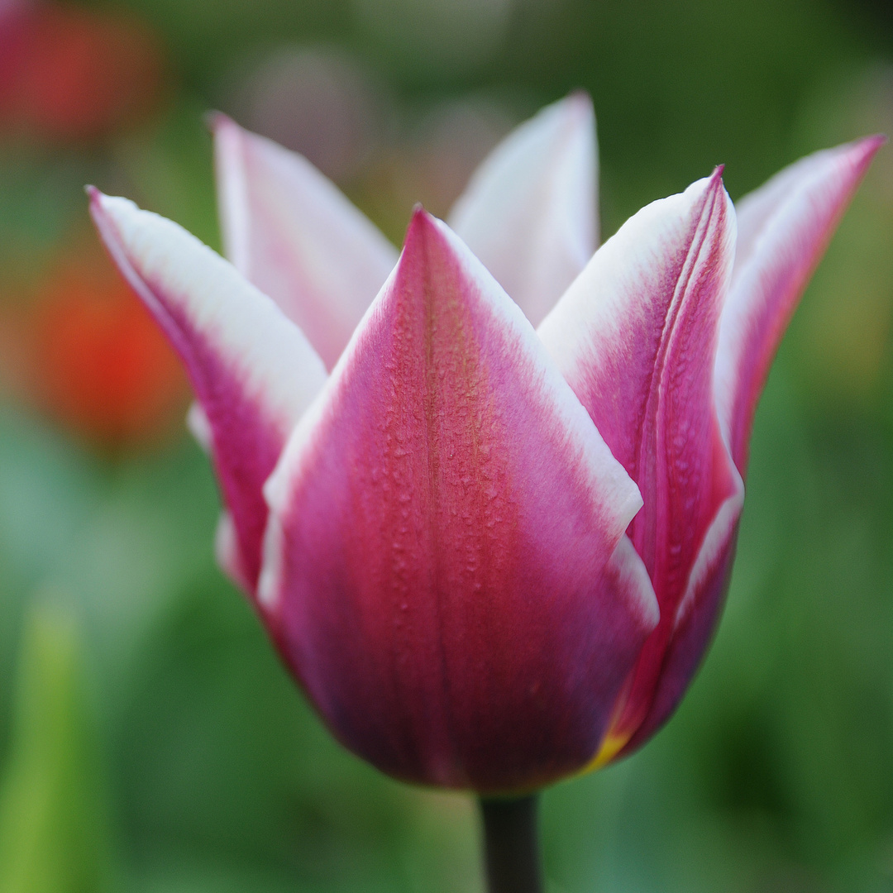

Visit one of the greastest places in the Netherlands
tulptravel offers an unparalleled floral experience that combines natural beauty,
cultural significance, and engaging activities.
Its unique annual themes and seasonal blooms make it a must-visit destination for flower lovers
and travelers alike.
Tulips are perennial herbaceous geophytes that bloom in spring
and die back after flowering to an underground storage bulb.
They range in height from 10 to 70 cm (4 to 28 inches) depending on the species.
Tulip stems have few leaves, typically two to six, which are strap-shaped and alternate on the stem.
Proper care after blooming is crucial for tulips to perform well in subsequent years.
Deadheading should be done immediately after blooming fades to prevent energy expenditure on seed
production.
Throughout spring and early summer, proper care helps maintain healthy plants for repeat
performances.

Symbolic and Cultural Significance In literature,
tulips often carry symbolic meanings. For example, in Sylvia Plath's poem "Tulips,
"the flowers represent pain, vividness of life, and the speaker's emotional state.
They can also symbolize love, passion, and beauty in various contexts.
Horticultural Characteristics Tulip bulbs are covered by a protective tunic
and can be glabrous or hairy inside 4. They are truncated at the bottom and elongated towards the
apex 4.
Tulip flowers come in various shapes and colors, including cup-shaped blooms 4.
The plants are known for their vibrant displays, especially in gardens like Keukenhof in Holland,
showcasing their beauty and diversity.